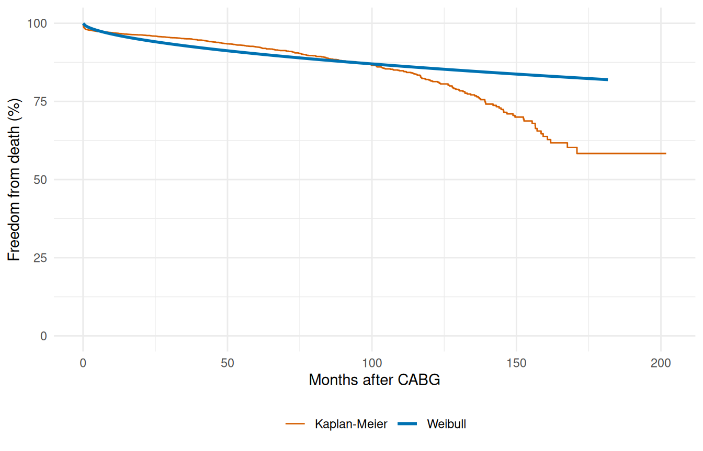
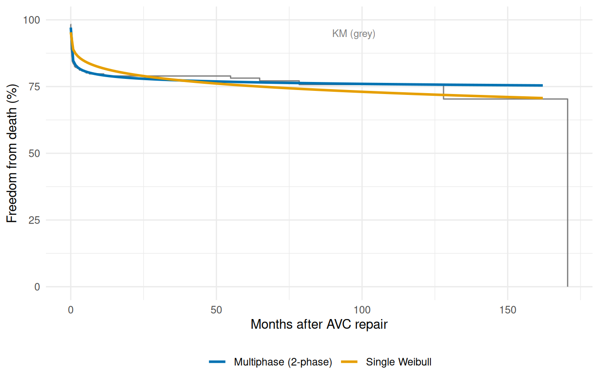

Fitting Hazard Models
From intercept-only to multiphase additive hazard
Source:vignettes/fitting-hazard-models.qmd
This vignette demonstrates the core model-fitting workflow, progressing from the simplest case (intercept-only, single distribution) through multivariable models to multiphase additive hazard decomposition. All examples use the clinical datasets shipped with the package.
1 Intercept-only model: CABG survival (KU Leuven)
The cabgkul dataset contains 5,880 patients who underwent primary isolated coronary artery bypass grafting at KU Leuven between 1971 and 1987. With only two columns — follow-up time and death indicator — it is the simplest starting point.
Fit an intercept-only Weibull hazard (no covariates):
Compare the parametric fit to the Kaplan-Meier estimate:
t_grid <- seq(0.01, max(cabgkul$int_dead) * 0.9, length.out = 200)
nd <- data.frame(time = t_grid)
surv <- predict(fit_kul, newdata = nd, type = "survival") * 100
km <- survfit(Surv(int_dead, dead) ~ 1, data = cabgkul)
km_df <- data.frame(time = km$time, survival = km$surv * 100)
ggplot() +
geom_step(data = km_df, aes(time, survival, colour = "Kaplan-Meier"),
linewidth = 0.5) +
geom_line(data = data.frame(time = t_grid, survival = surv),
aes(time, survival, colour = "Weibull"), linewidth = 1) +
scale_colour_manual(values = c("Weibull" = "#0072B2",
"Kaplan-Meier" = "#D55E00")) +
scale_y_continuous(limits = c(0, 100)) +
labs(x = "Months after CABG", y = "Freedom from death (%)",
colour = NULL) +
theme_minimal() +
theme(legend.position = "bottom")
A single Weibull captures the broad trend but misses the distinct early operative risk and late attrition that the KM curve reveals. This motivates the multiphase approach below.
2 Multivariable model: AVC repair
The avc dataset has 310 patients with 9 covariates. We can use the formula interface to fit a multivariable Weibull model.
data(avc)
avc <- na.omit(avc)
str(avc)
#> 'data.frame': 305 obs. of 11 variables:
#> $ study : chr "001C" "002C" "004C" "005C" ...
#> $ status : int 3 3 1 2 2 3 1 1 3 3 ...
#> $ inc_surg: int 4 3 2 3 1 2 3 2 3 3 ...
#> $ opmos : num 9.46 34.07 51.58 55 60.65 ...
#> $ age : num 69.2 53.7 286.1 154.6 48.4 ...
#> $ mal : int 0 0 0 1 0 0 0 0 0 0 ...
#> $ com_iv : int 1 1 1 1 1 1 1 1 1 1 ...
#> $ orifice : int 0 0 0 0 0 0 0 0 0 0 ...
#> $ dead : int 1 1 0 0 0 0 0 0 0 1 ...
#> $ int_dead: num 0.0534 0.3778 91.5337 111.608 106.8112 ...
#> $ op_age : num 654 1828 14759 8505 2933 ...
#> - attr(*, "na.action")= 'omit' Named int [1:5] 12 90 138 144 146
#> ..- attr(*, "names")= chr [1:5] "12" "90" "138" "144" ...
fit_avc <- hazard(
Surv(int_dead, dead) ~ age + status + mal + com_iv + inc_surg + orifice,
data = avc,
dist = "weibull",
theta = c(mu = 0.20, nu = 1.0, rep(0, 6)),
fit = TRUE,
control = list(maxit = 500)
)
fit_avc
#> hazard object
#> observations: 305
#> predictors: 6
#> dist: weibull
#> engine: native-r-m2
#> log-lik: -197.159
#> converged: TRUEThe coefficient estimates give the log-hazard-ratio for each covariate. Covariates with large positive coefficients (mal, com_iv) are associated with higher operative risk.
3 Multiphase model: additive hazard decomposition
The key innovation of the Blackstone–Naftel–Turner framework is decomposing the hazard into additive temporal phases:
Each phase has its own temporal shape (early peaking, constant, late rising) and its own intercept. We specify phases with hzr_phase():
fit_mp <- hazard(
Surv(int_dead, dead) ~ 1,
data = avc,
dist = "multiphase",
phases = list(
early = hzr_phase("cdf", t_half = 0.5, nu = 1, m = 1,
fixed = "shapes"),
constant = hzr_phase("constant")
),
fit = TRUE,
control = list(n_starts = 5, maxit = 1000)
)
summary(fit_mp)
#> Multiphase hazard model (2 phases)
#> observations: 305
#> predictors: 0
#> dist: multiphase
#> phase 1: early - cdf (early risk)
#> phase 2: constant - constant (flat rate)
#> engine: native-r-m2
#> converged: TRUE
#> log-lik: -228.029
#> evaluations: fn=32, gr=10
#>
#> Coefficients (internal scale):
#>
#> Phase: early (cdf)
#> estimate std_error z_stat p_value
#> log_mu -1.4132735 0.04410012 -32.04693 2.422767e-225
#> log_t_half -0.6931472 NA NA NA
#> nu 1.0000000 NA NA NA
#> m 1.0000000 NA NA NA
#>
#> Phase: constant (constant)
#> estimate std_error z_stat p_value
#> log_mu -7.609476 NA NA NAComparing the single-phase Weibull to the multiphase fit:
t_grid <- seq(0.01, max(avc$int_dead) * 0.95, length.out = 200)
nd <- data.frame(time = t_grid)
km_avc <- survfit(Surv(int_dead, dead) ~ 1, data = avc)
km_df <- data.frame(time = km_avc$time, survival = km_avc$surv * 100)
fit_wb <- hazard(
Surv(int_dead, dead) ~ 1, data = avc, dist = "weibull",
theta = c(mu = 0.20, nu = 1.0), fit = TRUE
)
surv_wb <- predict(fit_wb, newdata = nd, type = "survival") * 100
surv_mp <- predict(fit_mp, newdata = nd, type = "survival") * 100
plot_df <- rbind(
data.frame(time = t_grid, survival = surv_wb, Model = "Single Weibull"),
data.frame(time = t_grid, survival = surv_mp, Model = "Multiphase (2-phase)")
)
ggplot() +
geom_step(data = km_df, aes(time, survival), colour = "grey50",
linewidth = 0.5) +
geom_line(data = plot_df, aes(time, survival, colour = Model),
linewidth = 1) +
scale_colour_manual(values = c("Single Weibull" = "#E69F00",
"Multiphase (2-phase)" = "#0072B2")) +
scale_y_continuous(limits = c(0, 100)) +
annotate("text", x = max(t_grid) * 0.6, y = 95, label = "KM (grey)",
size = 3, colour = "grey50") +
labs(x = "Months after AVC repair", y = "Freedom from death (%)",
colour = NULL) +
theme_minimal() +
theme(legend.position = "bottom")
The multiphase model tracks the KM curve much more closely, capturing both the steep early decline and the gradual late attrition that a single Weibull cannot represent.
4 Multi-endpoint models: heart valve replacement
The valves dataset (1,533 patients) has multiple time-to-event endpoints — death, prosthetic valve endocarditis (PVE), and reoperation — each with its own follow-up time and event indicator. The same hazard() call fits each endpoint independently:
data(valves)
valves <- na.omit(valves)
fit_death <- hazard(
Surv(int_dead, dead) ~ age_cop + nyha + mechvalv,
data = valves,
dist = "weibull",
theta = c(mu = 0.10, nu = 1.0, rep(0, 3)),
fit = TRUE,
control = list(maxit = 500)
)
fit_death
#> hazard object
#> observations: 1523
#> predictors: 3
#> dist: weibull
#> engine: native-r-m2
#> log-lik: -1820.55
#> converged: TRUE
fit_pve <- hazard(
Surv(int_pve, pve) ~ age_cop + nve + mechvalv,
data = valves,
dist = "weibull",
theta = c(mu = 0.02, nu = 1.0, rep(0, 3)),
fit = TRUE,
control = list(maxit = 500)
)
fit_pve
#> hazard object
#> observations: 1523
#> predictors: 3
#> dist: weibull
#> engine: native-r-m2
#> log-lik: -391.125
#> converged: TRUEEach endpoint can be modeled independently with appropriate covariates. The hazard model structure — temporal shape + covariate effects — is the same regardless of the clinical endpoint.
5 Phase types reference
The hzr_phase() constructor supports three temporal shapes:
| Type | Description | Typical use |
|---|---|---|
"cdf" |
Sigmoidal CDF shape (parameterized by t_half, nu, m) |
Early or late phases with transient risk |
"constant" |
Flat hazard (no temporal shape parameters) | Ongoing background risk |
"g3" |
Late-phase G3 parameterization (4 parameters: tau, gamma, alpha, eta) |
Late-rising risk matching C/SAS G3 output |
The "cdf" type covers the widest range of shapes. Setting t_half small (e.g., 0.5) creates an early-peaking phase; setting it large (e.g., 10) creates a late-rising phase. The "constant" phase needs no shape parameters. See vignette("mf-mathematical-foundations") for the full mathematical treatment.